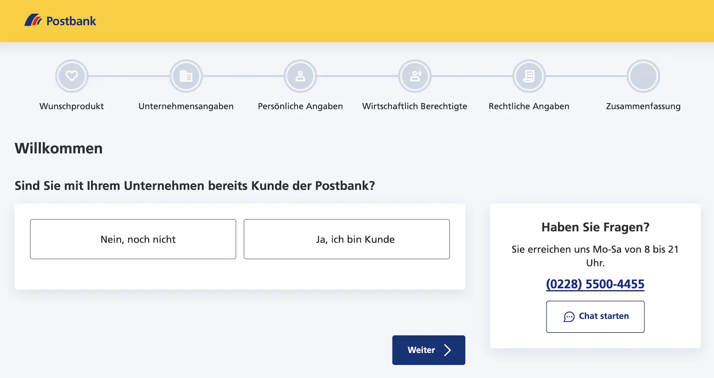

Das Wichtigste: Postbank Geschäftskonto
- 3 Tarife: Business Giro (12,90 €), Business Giro aktiv (16,90 €) und Business Giro aktiv plus (24,90 €). Für Neukunden gilt aktuell 0 € Grundgebühr bis 30.09.2026.
- Buchungsgebühren: beleglose SEPA-Buchungen kosten je nach Tarif 0,28 €, 0,22 € oder 0,12 €; beleghafte Aufträge 3,00 €.
- Einlagensicherung: gesetzlich bis 100.000 €; zusätzlich Schutz über den freiwilligen Bankenfonds.
- Bargeld ist möglich: Einzahlungen in Filialen, Abhebungen an über 6.000 Stellen und Bargeld-Code per App.
- Stärken: persönliche Filialberatung, viele Rechtsformen, DATEV/sevDesk und klassische Kreditlösungen.
- Gründerkonto: im ersten Jahr ohne Grundpreis sowie ohne Entgelt für sevDesk und Steuerbüro-Schnittstelle.
Für wen ist das Postbank Geschäftskonto geeignet — und für wen nicht?
Am besten passt das Postbank Geschäftskonto zu Unternehmen mit Filialbedarf und regelmäßigem Bargeldgeschäft. Die Postbank verbindet digitales Banking mit persönlicher Beratung vor Ort. Reine Online-Nutzer mit geringem Buchungsvolumen fahren bei Fintechs in der Regel günstiger.
- Bargeldintensive Betriebe — passend für Handel, Gastronomie und Handwerk
- Unternehmen mit Filialbedarf — persönliche Beratung vor Ort im ganzen Bundesgebiet
- Gründer im ersten Jahr — Gründerkonto ohne Grundpreis mit Zusatzpaket
- Unternehmen mit Kreditbedarf — klassische Kredit- und Finanzierungslösungen
- Wenige Buchungen bei kleinem Budget — jede Transaktion kostet extra
- Rein digitale Nutzer — Fintechs bieten oft günstigere Konditionen und mehr Tools
- Moderne Kartenfeatures — Fokus liegt auf klassischen physischen Karten
- Integrierte Zusatztools — Rechnungs- und Ausgabenfunktionen kommen eher über Partner
Postbank Geschäftskonto: Rechtsformen
Das Postbank Geschäftskonto ist grundsätzlich für viele Rechtsformen geeignet. Neben Einzelunternehmen und Freiberuflern kommen auch Personen- und Kapitalgesellschaften sowie weitere Organisationsformen in Betracht. Bei komplexeren Fällen lohnt sich trotzdem die direkte Abstimmung mit der Bank, weil Legitimation, Unterlagen und Eröffnungsweg abweichen können.
| Rechtsform | Status | Unterlagen / Hinweis |
|---|---|---|
| Freiberufler / Gewerbetreibende | Möglich |
|
| GbR | Möglich |
|
| Juristische Personen / weitere Unternehmensformen | Möglich |
|
Postbank Geschäftskonto: Kosten & Konditionen
Die folgende Tabelle zeigt alle wesentlichen Gebühren und Konditionen für alle drei Postbank-Geschäftskontomodelle. Alle Angaben basieren auf den offiziellen Postbank-Preisseiten (postbank.de), geprüft am 6. Juni 2026.
| Leistung | Business Giro | Business Giro aktiv | Business Giro aktiv plus |
|---|---|---|---|
| Für wen geeignet? | Unternehmen mit wenigen Buchungen, Fokus auf günstige Grundgebühr | Regelmäßige Nutzung, ausgewogenes Verhältnis Gebühr / Buchungskosten | Unternehmen mit hohem Buchungsvolumen, günstigste Buchungskosten |
| Grundgebühr mtl. | 12,90 € Aktion: 0 € bis 30.09.2026 |
16,90 € Aktion: 0 € bis 30.09.2026 |
24,90 € Aktion: 0 € bis 30.09.2026 |
| Beleglose Buchungen | 0,28 € / Buchung Keine Freiposten |
0,22 € / Buchung Keine Freiposten |
0,12 € / Buchung Günstigster Tarif |
| Beleghafte Buchungen | 3,00 € / Posten | 3,00 € / Posten | 3,00 € / Posten |
| Girocard (Debitkarte) | Im 1. Jahr ohne Grundpreis | Im 1. Jahr ohne Grundpreis | Im 1. Jahr ohne Grundpreis |
| Business Card Plus (MC Debit) | Im 1. Jahr entgeltfrei danach 24 € / Jahr |
Im 1. Jahr entgeltfrei danach 24 € / Jahr |
Im 1. Jahr entgeltfrei danach 24 € / Jahr |
| Mastercard Classic (Kreditkarte) | 30 € / Jahr kein Gratisjahr im Basis-Tarif |
Im 1. Jahr kostenlos danach 30 € / Jahr |
Im 1. Jahr kostenlos danach 30 € / Jahr |
| Mastercard Gold (Kreditkarte) | 80 € / Jahr | 80 € / Jahr | 80 € / Jahr |
| Bargeldabhebung | Über 6.000 Stellen möglich | Über 6.000 Stellen möglich | Über 6.000 Stellen möglich |
| Bargeldeinzahlung (Filiale) | 3,00 € je ang. 5.000 € + Buchungspostenentgelt |
3,00 € je ang. 5.000 € zzgl. Buchungspostenentgelt |
3,00 € je ang. 5.000 € zzgl. Buchungspostenentgelt |
| Bargeld-Code (App, Einzelhandel) | Einzahlung: 1,5 % Auszahlung kostenlos |
Einzahlung: 1,5 % Auszahlung kostenlos |
Einzahlung: 1,5 % Auszahlung kostenlos |
| DATEV-Schnittstelle | + 10 €/Monat | + 10 €/Monat | + 10 €/Monat |
| Kontokorrentkredit | Ab 9,95 % p.a. bonitätsabhängig |
Ab 9,95 % p.a. | Ab 9,95 % p.a. |
| Online- / Mobile Banking | Inklusive | Inklusive | Inklusive |
| Fremdwährung (Karteneinsatz) | 1,5 % Auslandsentgelt | 1,5 % Auslandsentgelt | 1,5 % Auslandsentgelt |
| Konto eröffnen | Business Giro → | Giro aktiv → | Aktiv plus → |
Postbank Geschäftskonto: Vor- und Nachteile
- Bargeldeinzahlung in Filialen moeglich
- Grosses Netz fuer Bargeldabhebungen
- Auch fuer viele Rechtsformen wie AG oder e.V. geeignet
- Gründerkonto mit 12 Monaten ohne Grundpreis
- Filialberatung und Kontokorrentkredit als klassische Bankleistungen
- Keine Freiposten - jede Buchung kostet extra
- DATEV kostet 10 EUR extra pro Monat
- Keine virtuelle Karte fuer modernes Ausgabenmanagement
- Keine integrierte Rechnungsstellung oder E-Rechnung
- Komplexere Rechtsformen brauchen oft mehr Abstimmung
Funktionen & Features im Detail
Der wichtigste Unterschied zu Fintechs ist bei der Postbank die Kombination aus klassischem Filialbanking und digitalem Banking. Wer persönliche Beratung vor Ort und modernes Online-Banking braucht, ist hier gut aufgehoben. Schwächer ist die Postbank bei integrierten Tools für Buchhaltung und Rechnungsstellung.
Business-Assistent (Buchhaltungstools)
Ein digitaler Business-Assistent ist in alle Postbank-Geschäftskonten integriert. Für eine weitergehende Buchhaltungsanbindung sind zusätzliche Lösungen wie sevDesk oder die Datenschnittstelle zum Steuerbüro nötig. Diese Leistungen gehören nicht durchgängig zum Standardumfang aller Tarife.
BestSign — Sicherheitsverfahren
Für die Zwei-Faktor-Authentifizierung setzt die Postbank auf ihr eigenes BestSign-Verfahren. BestSign gibt es als App, im Postbank Finanzassistenten oder als separates Gerät. Freigaben sind per App, Fingerabdruck oder Gesichtserkennung möglich. Das System ist zuverlässig, aber weniger flexibel als TAN-freie Alternativen.
Kontokorrentkredit & Finanzierungen
Ein Kontokorrentkredit ab 9,95 % p.a. gehört bei der Postbank direkt zum Geschäftskonto-Angebot. Für Unternehmen mit Finanzierungsbedarf kann das ein relevanter Unterschied zu vielen reinen Zahlungsinstituten sein.
Postbank Geschäftskonto: Karten
Die Postbank bietet eine Girocard als Standardkarte in allen Tarifen. Dazu kommen drei optionale Kartenvarianten: eine Mastercard Debitkarte (Business Card Plus) und zwei echte Kreditkarten mit Überziehungsrahmen (Classic und Gold). Die Business Card Plus ist im ersten Jahr entgeltfrei.
| Karte | Typ | Kosten | Besonderheiten |
|---|---|---|---|
| Postbank Card (Girocard) | Debitkarte | Im 1. Jahr ohne Grundpreis | Für alle Kontomodelle ist Bargeldabhebung über 6.000 Stellen vorgesehen; die konkreten Konditionen hängen von Karte und Modell ab. |
| Business Card Plus (Mastercard) | Mastercard Debit | 24 € / Jahr im 1. Jahr entgeltfrei |
Weltweit einsetzbar, Tageslimit 1.000 €, Apple Pay/Google Pay |
| Mastercard Business Classic | Kreditkarte | 30 € / Jahr im Business Giro aktiv/aktiv plus im 1. Jahr entgeltfrei |
10 Tage Zahlungsziel, monatliche Abrechnung, Kreditlimit bonitätsabhängig |
| Mastercard Business Gold | Kreditkarte | 80 € / Jahr Rückvergütung bei hohem Umsatz möglich |
Erweiterte Reiseversicherungen, höheres Limit, Premium-Status |
Postbank Geschäftskonto: Bargeld & Abhebungen
Die Postbank gehört zu den stärkeren Filialkonten beim Thema Bargeld. Neben Filiale und Cash Group gibt es mit dem Bargeld-Code auch einen digitalen Ein- und Auszahlungsweg per App.
| Leistung | Business Giro | Business Giro aktiv | Business Giro aktiv plus |
|---|---|---|---|
| Bargeldabhebung | über 6.000 Stellen möglich | über 6.000 Stellen möglich | über 6.000 Stellen möglich |
| Bargeldeinzahlung (Filiale) | 3,00 € je ang. 5.000 € + Buchungspostenentgelt |
3,00 € je ang. 5.000 € zzgl. Buchungspostenentgelt |
3,00 € je ang. 5.000 € zzgl. Buchungspostenentgelt |
| Bargeld-Code | Einzahlung: 1,5 % Auszahlung kostenlos |
Einzahlung: 1,5 % Auszahlung kostenlos |
Einzahlung: 1,5 % Auszahlung kostenlos |
| Bargeld-Code-Limit | bis 300 € pro Vorgang max. 999,99 € in 24 Std. |
bis 300 € pro Vorgang max. 999,99 € in 24 Std. |
bis 300 € pro Vorgang max. 999,99 € in 24 Std. |
| Einordnung | stark für Filial- und Bargeldbedarf | gut für regelmäßige Nutzung | am rundesten für bargeldnahe Betriebe |
Buchhaltung, DATEV & Softwareintegration
Die Postbank ist keine Buchhaltungsplattform. Banking und Buchführung sind klar getrennt. Wer eine tiefere Buchhaltungsintegration sucht, muss auf externe Software setzen. Möglich wird das über Kooperationspartner und zusätzliche Schnittstellen.
| Funktion | Business Giro / aktiv / aktiv plus | Gründerkonto (1. Jahr) |
|---|---|---|
| DATEV-Schnittstelle (EBICS) | + 10 € / Monat | Im 1. Jahr ohne Grundpreis |
| sevDesk Buchhaltungssoftware | 25 % Rabatt im 1. Jahr | 12 Monate kostenlos |
| E-Rechnungsstellung (ZUGFeRD) | Nicht vorhanden | Nicht vorhanden |
| Business-Assistent | In allen Tarifen enthalten | In allen Tarifen enthalten |
| Online-Kontoauszug | Ohne separates Entgelt | Ohne separates Entgelt |
| Kontoauszug am Terminal (Filiale) | 1 € / Auszug | 1 € / Auszug |
Postbank Gründerkonto — Startpaket im ersten Jahr
Das Postbank Gründerkonto richtet sich an Unternehmen, deren Gründung nicht länger als 365 Tage zurückliegt. Im ersten Jahr fällt kein Grundpreis an. Das ist vor allem für Existenzgründer interessant, die Filialservice und zusätzliche Buchhaltungslösungen kombinieren möchten.
Nach dem ersten Jahr wechselt das Gründerkonto automatisch in das Postbank Business Giro aktiv. Dann fallen 16,90 €/Monat Grundgebühr an. Wer das nicht möchte, kann kündigen oder ein anderes Modell wählen. Je nach Rechtsform und Vertretungsstruktur können zusätzliche Unterlagen erforderlich sein; der genaue Ablauf sollte im Einzelfall mit der Bank abgestimmt werden.
Einlagenschutz & Regulierung bei Postbank
Die Postbank ist eine Marke beziehungsweise Niederlassung der Deutsche Bank AG. Kundenguthaben sind bis 100.000 € je Einleger gesetzlich geschützt; zusätzlich besteht Schutz über den freiwilligen Einlagensicherungsfonds des Bundesverbands deutscher Banken.
| Status | Marke / Niederlassung der Deutsche Bank AG |
| Aufsicht | Deutsche Bank AG unter Bankenaufsicht |
| Gesetzliche Einlagensicherung | Bis 100.000 € je Einleger |
| Zusätzlicher Schutz | Freiwilliger Einlagensicherungsfonds des Bundesverbands deutscher Banken |
Postbank Geschäftskonto eröffnen — So geht's
Die Kontoeröffnung bei der Postbank kann online gestartet werden. Für natürliche Personen ist VideoIdent möglich; bei juristischen Personen und komplexeren Rechtsformen kann der Ablauf abweichen. Die Video-Legitimation dauert in der Regel 5 bis 8 Minuten und ist täglich von 7.00 Uhr bis 22.00 Uhr verfügbar. Bis zur vollen Kontonutzung dauert es in der Regel bis zu acht Werktage.
- Kontomodell und Rechtsform wählen: Auf postbank.de „Online abschließen" klicken und Rechtsform auswählen. Für Freiberufler, Einzelunternehmer und natürliche Personen ist das VideoIdent-Verfahren mit WebID möglich; täglich von 7.00 Uhr bis 22.00 Uhr.
- Unternehmensdaten eingeben: Name, Adresse, E-Mail, Mobilnummer, Unternehmensdetails. Kleingewerbetreibende: Gewerbeanmeldung bereithalten. GbR: Gesellschaftsvertrag und Ausweise aller Verfügungsberechtigten.
- Legitimation: Natürliche Personen können den Prozess online per VideoIdent durchlaufen. Die Video-Legitimation dauert in der Regel nur 5 bis 8 Minuten. Auch für juristische Personen ist die Legitimation über die Vertretungsberechtigten möglich; je nach Rechtsform und Unterlagen kann der Ablauf abweichen.
- Unterlagen per Post erhalten: Nach Prüfung werden Karte, PIN und Zugangsdaten gestaffelt per Post zugestellt — vollständige Kontonutzung in der Regel nach bis zu acht Werktagen.
- Optional: Extras konfigurieren: Kreditkarte beantragen, DATEV-Schnittstelle einrichten, sevDesk-Zugang aktivieren. Im Gründerkonto sind diese im ersten Jahr ohne Grundpreis vorgesehen.

Postbank Geschäftskonto Fazit 2026
Kurzfazit: stark bei Bargeld, Filialnähe und Gründerpaket, schwächer bei Freiposten, laufenden Buchungskosten und digital-first Workflows.
Besonders lohnt sich das Postbank Geschäftskonto 2026 für Einzelhändler, Gastronomen, Handwerksbetriebe und andere Unternehmen mit regelmäßigem Bargeldbedarf oder Wunsch nach Filialnähe. Weniger passend ist Postbank für rein digital arbeitende Unternehmen mit wenig Bargeld, weil ohne Freiposten und bei höherem Buchungsvolumen die laufenden Kosten spürbar steigen und schlankere Alternativen wie FYRST, Holvi oder Finom oft günstiger wirken.
Nicht das Richtige? Diese Alternativen könnten passen
Alle drei Anbieter haben wir ebenfalls getestet — hier die wichtigsten Unterschiede auf einen Blick.

Naheliegend für Unternehmen mit Bargeldbedarf, eigenem Automatennetz und stärkerem Filialfokus als bei der Postbank.
✓ dichteres eigenes Einzahl-/Automatennetz
× weniger attraktiv für günstige Start-Setups
Gut für Unternehmen, die klassische Filialbank-Beratung, breite Struktur und höherwertige Betreuung als bei der Postbank suchen.
✓ passender bei größerem Beratungsbedarf
× weniger attraktiv für preissensible Gründer
Spannend für preisbewusste Unternehmen, die Bargeldservices über Postbank nutzen möchten, aber digitaler starten wollen als bei der Postbank selbst.
✓ digitaler als klassische Filialbanken
× Bargeld weniger direkt nutzbar als bei Postbank
Alle Konten im großen Vergleich: Geschäftskonto-Vergleich 2026 →